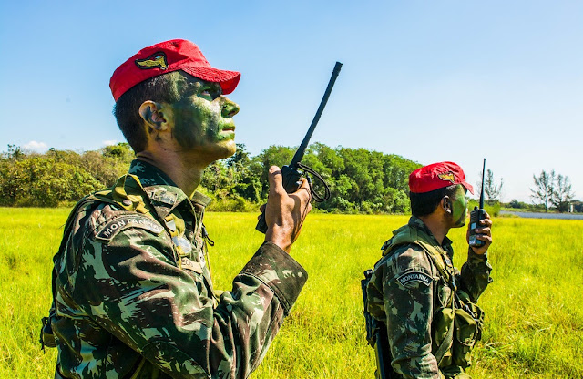

🇧🇷 Missões nacionais
Comunidades rurais, ribeirinhas e indígenas, com consentimento comunitário e coordenação das autoridades competentes.
Projeto independente de assistência humanitária em comunidades remotas.
Faça parte da equipe Apoie a causaComunidades rurais, ribeirinhas e indígenas, com consentimento comunitário e coordenação das autoridades competentes.
Assistência em regiões remotas e crises humanitárias, em parceria com organizações locais.
Aeronave proposta para transporte de equipes e suprimentos. Operações dependem de financiamento, certificação e autorização aeronáutica.

Balizamento de zonas de lançamento de cargas e apoio logístico humanitário, sob coordenação técnica autorizada. Interesse em emprego ou voluntariado.
Diagnóstico, tratamento, prevenção e assistência clínica conforme habilitação profissional.
Assistência de enfermagem, acompanhamento e continuidade do cuidado após tratamento médico.
Futuras doações poderão financiar medicamentos, alimentação, transporte e equipamentos. Nenhum pagamento é recebido neste protótipo.
Projeto conceitual independente, sem vínculo oficial com a ONU ou Médicos Sem Fronteiras.